MiDoc
Resumen
- Categoría: Diseño de apps mobile
- Cliente: MiDoc
- Fecha: Agosto, 2020
- Prototipo - App Médicos: Figma
- Prototipo - App Pacientes: Figma
Producto: Prototipo de app mobile navegable en Figma. Objetivo: Diseñar una app que sea un medio de comunicación entre médicos y pacientes, protegiendo la privacidad del número telefónico de los médicos. Logro: Diseño pensado tanto en el médico como en el paciente, sigue los lineamientos de las heurísticas de usabilidad.
Reto
Resolver las necesidades de comunicación entre médicos y pacientes, otorgándoles privacidad, confianza y buen servicio. A través del rediseño de app de paciente y diseño de app de médico que incluya mensajería y notificación.
PROCESO
HUMAN CENTER DESIGN
Research
Benchmark
Screener survey
Entrevistas
Evaluación heurística
Definition
User Personas
Affinity Map
Empathy Map
Insights
HMW
PMV
Ideation
Diagramas de flujos
User flows
Prototype
Wireframes
Prototipado en alta calidad
Testing
Pruebas de usabilidad
Descubrimiento e investigación
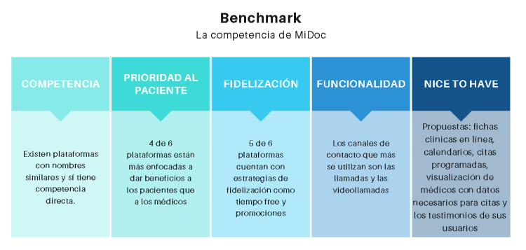 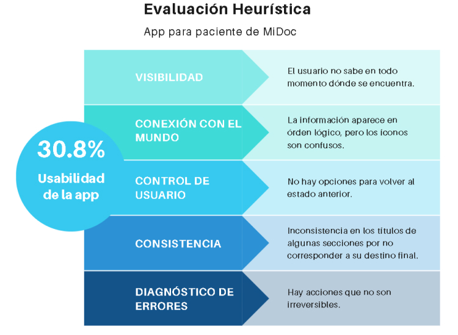Entrevistas
Realizamos entrevistas a 6 médicos, el promedio de la edad era de 38 años y a 6 pacientes, con un promedio de edad de 33 años.
Estos fueron los hallazgos:
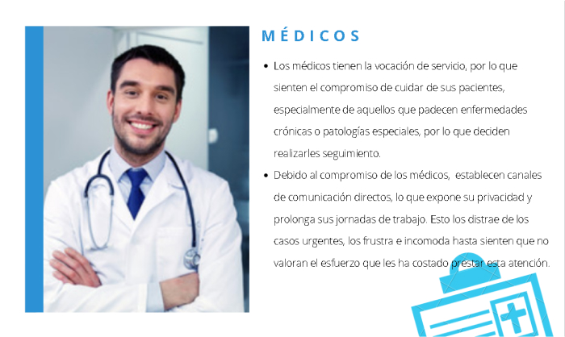 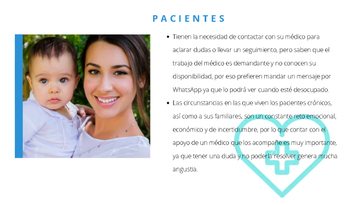Síntesis y definición
Con toda la información recolectada se realizaron los user personas, se descubrieron los insights y se formularon los HMW.
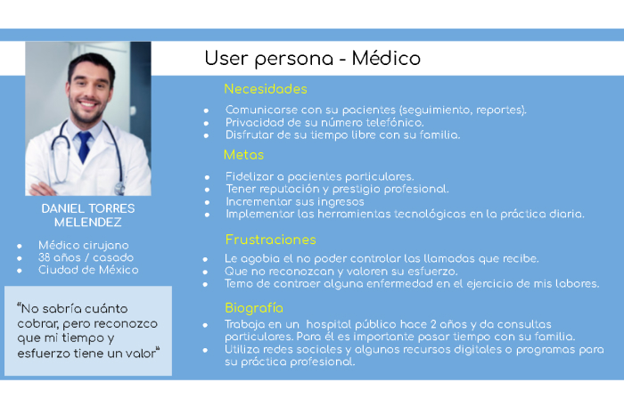 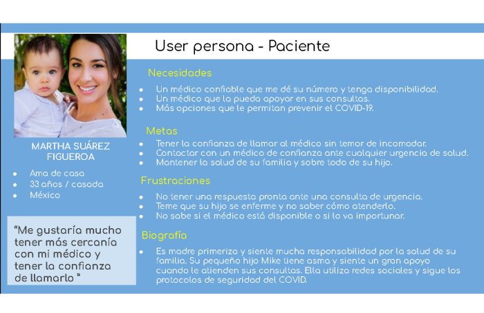 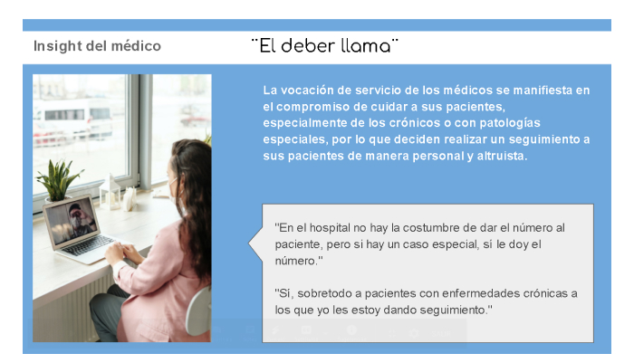 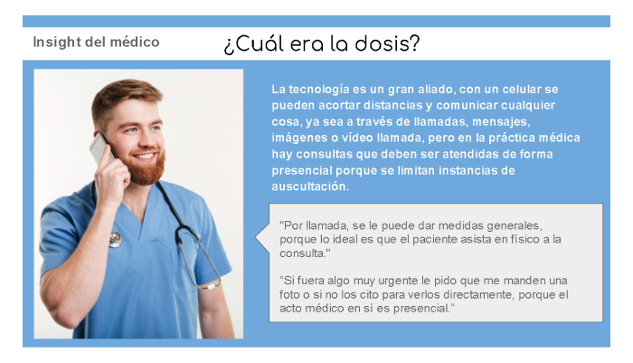 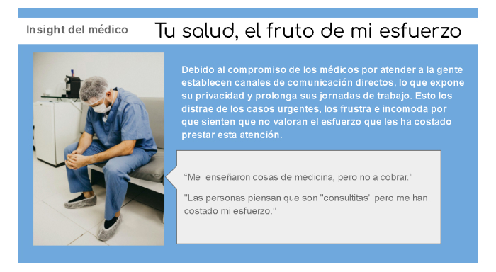 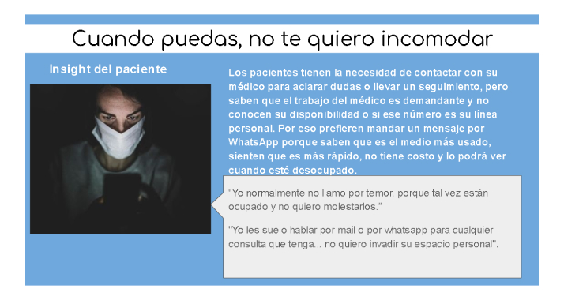 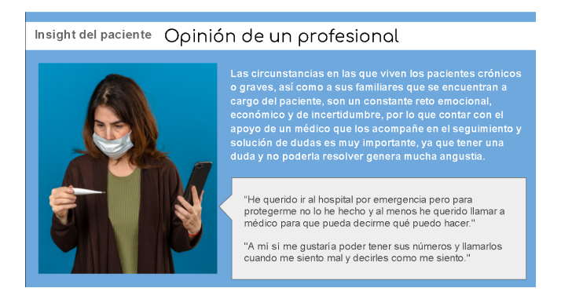 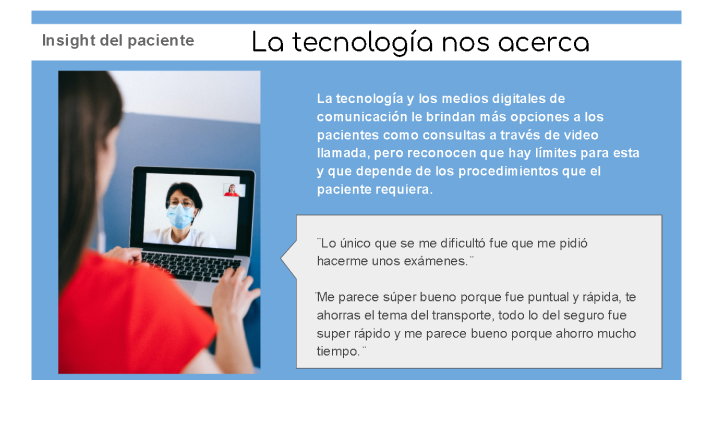HMW | MVP
Establecidos los hallazgos e insights, nos hicimos las siguientes preguntas: (1) Para los usuarios médicos ¿Cómo podríamos hacer productivas y significativas las interacciones entre los médicos y los pacientes fuera del consultorio protegiendo su privacidad y respetando su tiempo? y (2) Para los usuarios pacientes: ¿Cómo podríamos preservar el sentimiento de profesionalismo en una consulta virtual para mantener la confianza en el diagnóstico que recibe un paciente?
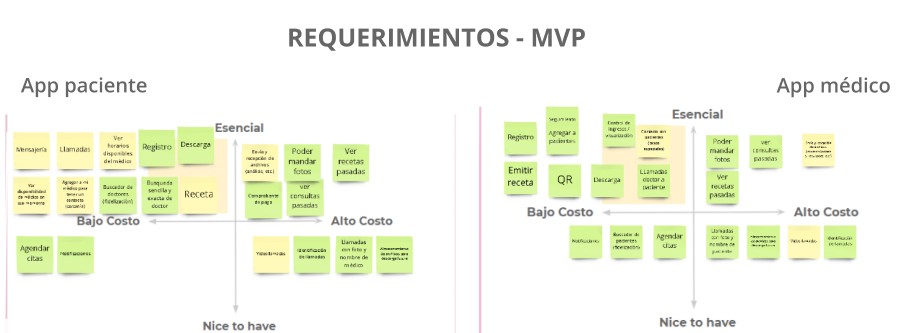Ideación
Luego de definir los requerimientos, se estableció el diagrama de flujo de la app y los wireframes para las vistas a rediseñar.
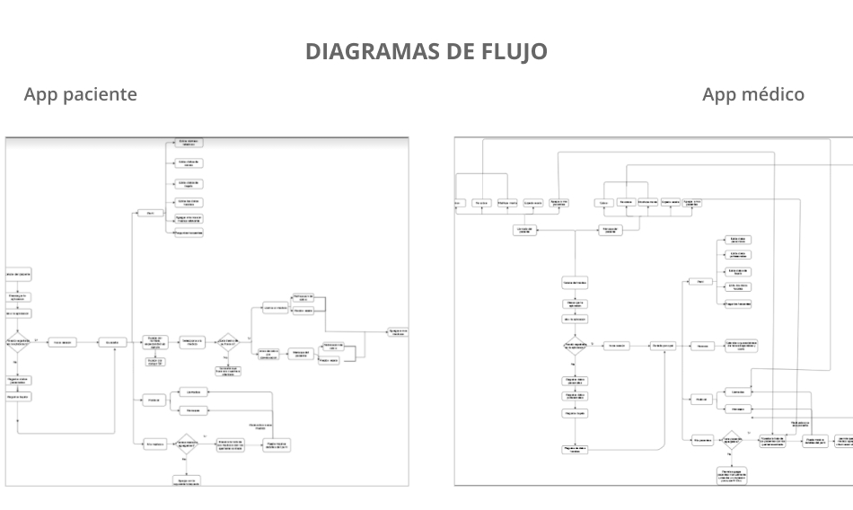 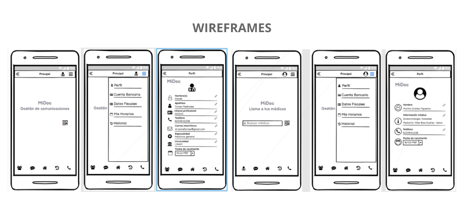Testeo
Se procedió a realizar el testeo con las personas entrevistas y también se midió el nivel de usabilidad con Maze para ubicar los puntos de mejora del prototipo.
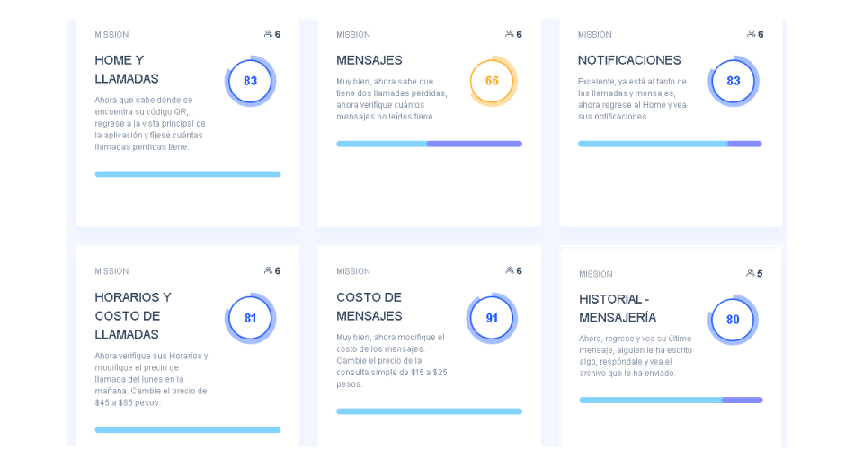Prototipo
Se realizaron iteraciones del diseño y finalmente este fue el prototipo final.
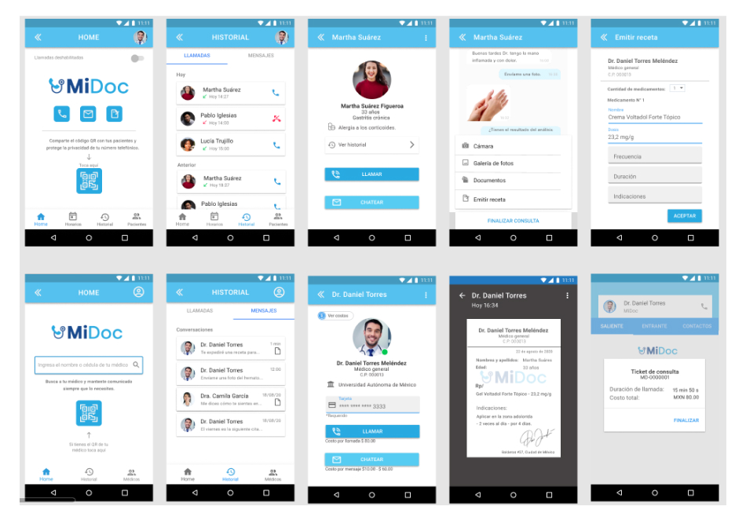